Vrch Vítkov v centru Prahy pod sebou ukrývá kromě několika starých tunelů pro vlaky také tunel pro pěší. Málokdo však ví, co se skrývá za zcela nenápadnými kovovými dveřmi, posprejovanými klikyháky sprejerů.


Hned za dveřmi je možné spatřit 22kV trafostanici, která dodává potřebné napájení pro všechno vybavení uvnitř. Původně byla určena pro Karlín.

Směrem doleva je možné projít několika úzkými betonovými chodbami. Ty vedou do malé místnosti s několika dveřmi.
Za modrými dveřmi vlevo se ukrývá skladiště a obrovská betonová čočka, která byla kdysi pohyblivá a umožňovala tunel uzavřít, a zvýšit tak jeho odolnost proti atomovému výbuchu.
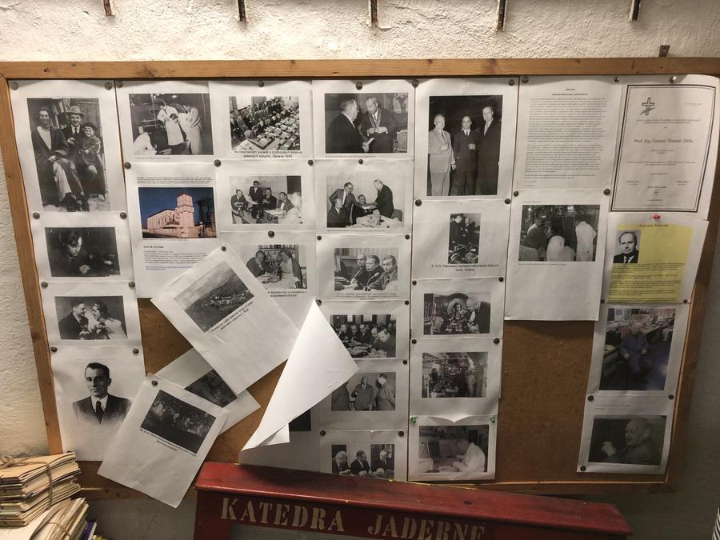Dveře napravo pak už podle piktogramů a nápisů dávají pocit něčeho podstatně zajímavějšího:

První podlouhlá místnost za dveřmi ukrývá mechanickou dílnu.

Za touto místností následuje elektronická laboratoř:
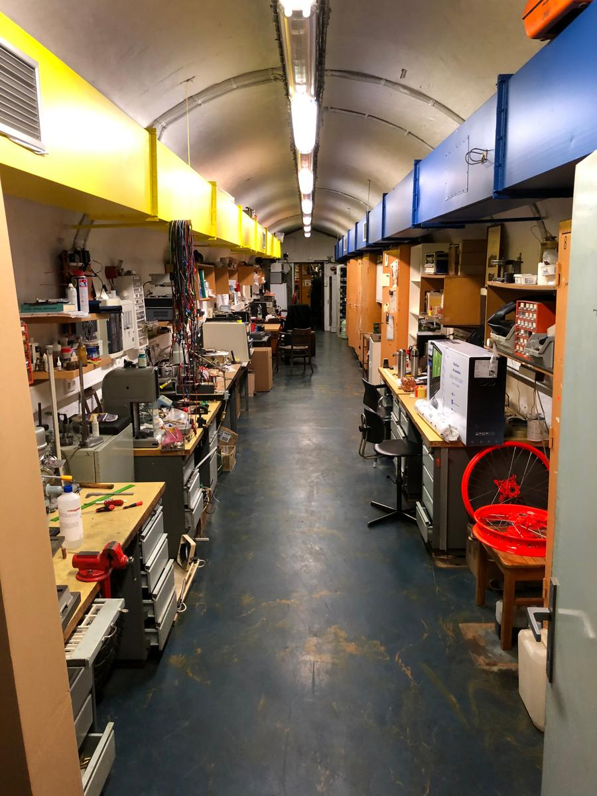Předposlední místnůstka tvoří jakousi křižovatku, ve které se kromě dveří, jimiž jsme vstoupili, nacházejí ještě další dvoje. Jedny obrovské, pancéřové, druhé normální. Za těmi dvě tuny vážícími, olovem naplněnými, hydraulikou ovládanými dveřmi, se ukrývá Mikrotron.

Za těmi normálními pak spektrometr, kde se analyzují vzorky.
V místnůstce s dveřmi je také kontrolní panel, který se od roku 1981 prakticky nezměnil:

(Za povšimnutí stojí tabulka se schématem zhruba uprostřed.)


Šedá krabice na obrázku vpravo je modulátor magnetických vln. Jedná se o kusovou výrobu z ruského Petrohradu. Výsledná vlna je vlnovodem vedena do poslední a nejdůležitější místnosti, do které se vchází přechodovou komorou tvořenou dvojicí obrovských olověných dveří, poskytujícími stínění ekvivalentní třem metrům betonu:

Zde se nachází Mikrotron MT25.
 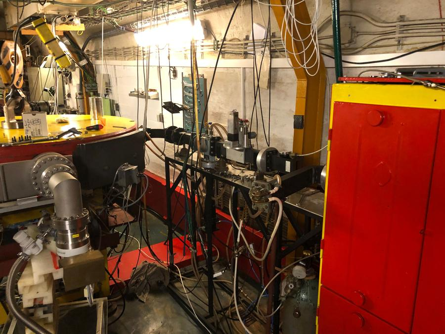
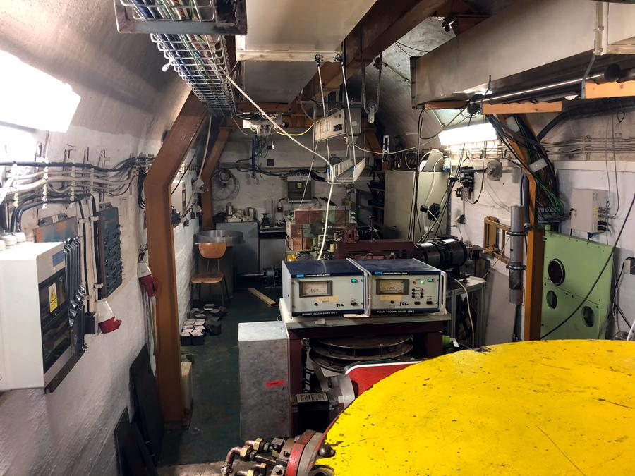
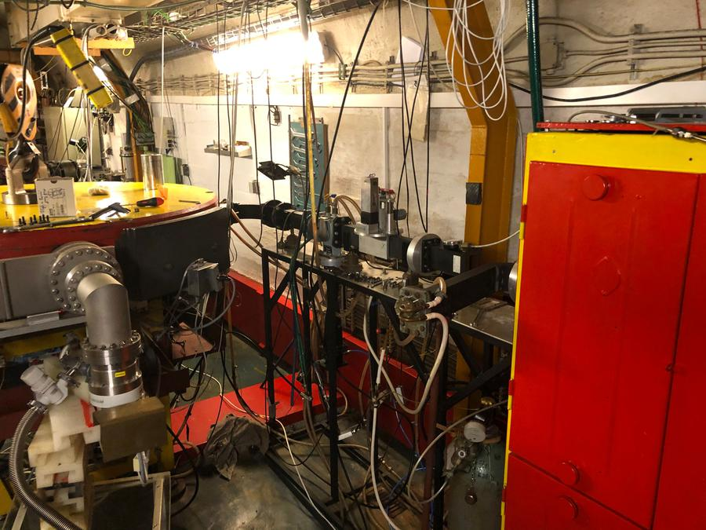
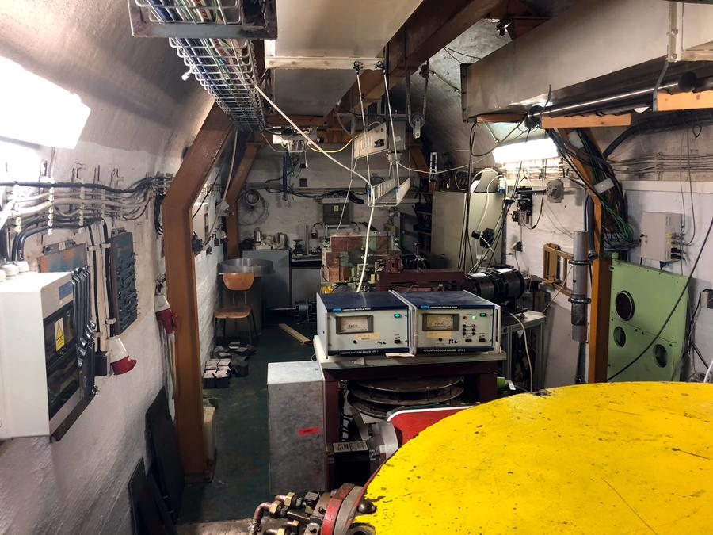

Mikrotron je urychlovač urychlující skupiny elektronů na volitelnou energii. Do „žlutého kola“ jsou přiváděny mikrovlny, které ve žhavém, napětím vybuzeném krystalu (?hexalantu boridu?) dutinového rezonátoru udělí elektronům na valenčních sférách počáteční energii. Nabité částice poté vykonají v magnetickém poli kruhový pohyb.
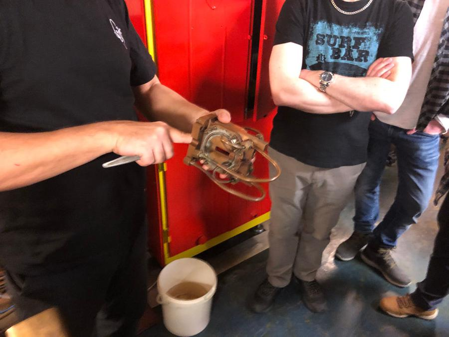(Součástka dutinového rezonátoru. Ve štěrbině uprostřed se ukrývá krystal. Omlouvám se za rozostřenou fotografii.)
Elektrony jsou ve skupinách anglicky nazývaných „bunch“ urychlovány po kruhových drahách, ve kterých se drží díky tomu, že celá komora je jeden velký magnet, ovlivňující jejich trajektorie.
Celé zařízení je načasováno a spočítáno tak, aby délka oběhu elektronů po kružnici byla násobkem vlnové délky přicházejícího magnetického záření. Díky tomu je elektronům opakovaně v každém oběhu předávána energie zhruba 1 MeV, což způsobuje jejich přesun na vyšší orbitu s větším poloměrem kružnice.
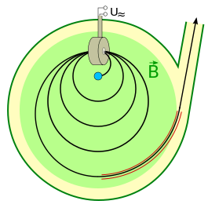(Zdroj: https://commons.wikimedia.org/wiki/File:ClassicMicrotronSketch.svg )
Tento konkrétní mikrotron umožňuje volbu několika vnitřních průměrů drah, a tedy i výstupních energií odstupňovaných po 1MeV krocích od 6 MeV do 25 MeV. Svazek elektronů je poté v určitou chvíli vyveden ven a nasměrován skrz další magnety na konkrétní cíl.
Vývodový kanál je v podstatě posuvná trubka, kterou je možné umístit na konkrétní dráhu. Tu je nutno nastavit před zapnutím přístroje, čímž dojde k výběru energie svazku.
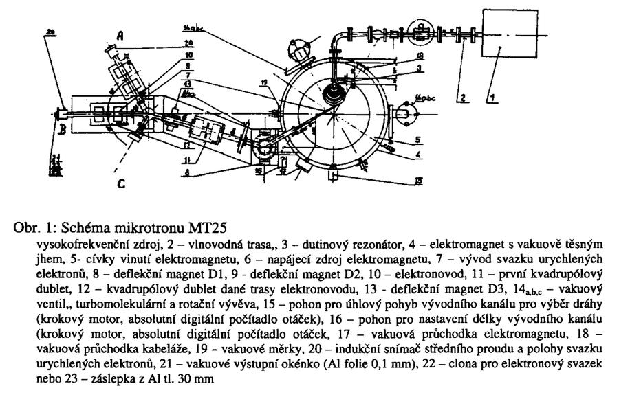(CHVÁTIL, David, Miroslav VOGNAR a Pavel KRIST. Mikrotron MT 25 - zdroj tvrdého záření gama [online]. , 1 [cit. 2020-04-01]. Dostupné z: https://inis.iaea.org/collection/NCLCollectionStore/_Public/39/084/39084493.pdf)
Zajímavostí je, že díky vnitřní konstrukci nejde regulovat proud elektronů pod asi 13 MeV, protože trubku není možné zkroutit na patřičnou dráhu. Regulace na nižší energetické hodnoty se provádí výměnou dutinového rezonátoru s energií jen 0.5 MeV, který efektivně vydělí získávané energie dvěma.
Elektrony jsou poté přivedeny do elektronovodů, což jsou v podstatě kovové trubky, na kterých jsou přidělány magnety:

Dipóly, které fungují jako selektory výstupů, umožňují vybrat konkrétní elektronovod využitím stejného pravidla, jako funguje i v mikrotronu - nabitá částice zakřivuje v externím magnetickém poli svou trajektorii. Čím je částice energetičtější, tím silnější magnety jsou potřeba. Takto je možné rovně letící částici nechat vletět do jedné z několika trubek.

Na trubkách jsou magnety, které náš průvodce označuje jako „kvadrupólové duplety“. Ty umožňují svazek zaostřit či rozostřit, a to od milimetrů až po cca dvanáct centimetrů. Princip je trochu podobný zaostřování ve starých CRT televizích.

Celý princip jsem se pokusil v klíčových detailech zachytit v animaci zde:
Výstup vypadá takto:

V podstatě trubka zakončená nějakým materiálem. V případě fotky se jedná o fólii s luminoforní vrstvou, která způsobuje, že v místě, kde skrz ni prolétají elektrony, svítí. Toto světlo je sledováno silně stíněnou kamerou, umístěnou nad mikrotronem, která přes zrcadlo míří právě na tuto fólii.
Za fólii je možné umístit další filtry. Materiál s velkým protonovým číslem způsobuje, že elektrony brzdí v coulombovském poli částic, do kterých narazí. Některé materiály (používá se například wolfram) jsou spočítány aby v nich elektrony zabrzdily úplně, a to tím, že vyrazí elektron z jádra, čímž vznikne díra, která se za emise fotonového gama záření zaplní jiným elektronem. Jiné materiály, například olovo či ochuzený uran, způsobují pak ještě další konverzi gama fotonů na neutrony (elektron má takovou energii, že u konkrétního materiálu vyrazí neutron z jádra).
Tímto jednoduchým principem je možné z jednoho zařízení dostat jak proud elektronů, tak i gama a neutronové záření.
Elektrony jsou monoenergetické, protože všechny ostatní jsou vyeliminovány, když v kruhových drahách vypadnou ze synchronizace urychlovaného „bunche“. Fotony mají energetické spektrum spojité.
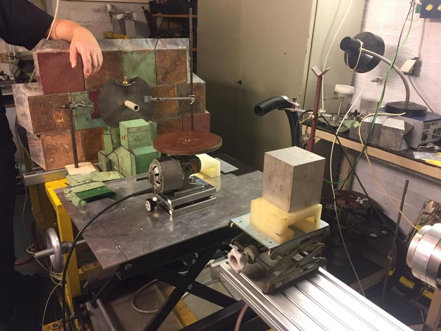Elektronovod zde míří na dočasně postavenou hradbu z cihliček olova, která slouží k odstínění nechtěného záření, kromě malého úzkého prostoru v trubičce uprostřed.
Často se také používá otočná ploška s motorem, na které se otáčí vzorek. Pokud se podíváme na zakončení druhého elektronovodu, vede jako by do prázdna před zelenou krabicí:
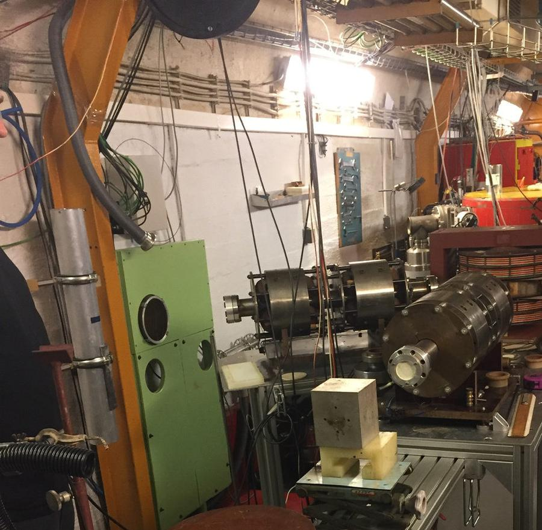Za povšimnutí stojí hliníkově vypadající trubka vlevo od oranžového sloupu. Jedná se o trubku na kapsle pneumatické pošty. Ty jsou ozářeny skrz úzkou škvíru a poté vytaženy tmavě šedou hadicí, která je na fotce nahoře v danou chvíli odpojená. Potrubní pošta vede do místnosti vedle, kde je spektrograf, který změří spektrum ozářeného vzorku, a tím získá například informace o jeho složení.
Díky systému potrubní pošty je možné detekovat i vzorky s velmi krátkým poločasem rozpadu (vteřiny či méně).
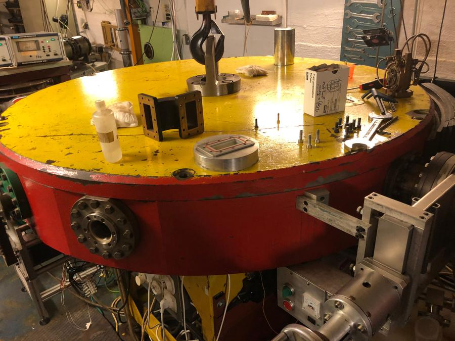Ke zvedání víka je nad mikrotronem malý jeřáb s pojezdovou dráhou. Ten je využíván k provádění údržby, výměně dutinového rezonátoru a tak podobně. Ingot tvořící tělo mikrotronu je použit jako pólový nástavec magnetu, který vytváří homogenní magnetické pole. Uvnitř jsou však také korekční cívky, které upravují nedokonalé kruhové dráhy ovlivněné nehomogenitami materiálu.
Elektron má cca 1000x menší váhu než proton, tedy urychlování elektronů je 1000x lehčí než protonů. Asi nejznámější urychlovač částic v CERNu má oproti mikrotronu 7 TeV na proton, což dává rozdíly energií asi miliardkrát větší (6 řádů na tera + tisíckrát víc na proton). Jak vysvětluje náš průvodce, nedá se použít přirovnání ke šnekovi a formuli jedna, neboť tam je rozdíl rychlostí jen o pár řádů.
Teoreticky by se mohlo zdát, že mikrotron nemá moc uplatnění, když všude možně ve světě stojí přístroje schopné dosahovat významně větší energie. Mikrotron má však velkou výhodu v obrovské konfigurovatelnosti svazku, energií a druhů částic, ale také právě v tom, že dosahuje malých energií, které se dají používat například k chemickým proměnám.
Z fyziky částic plyne, že pokud je energie částice menší jak 10 MeV, tak nabité částice nejsou schopny překonat coulombovskou bariéru jádra, a tedy nedojde k jaderné reakci. Jinými slovy, všechny změny, které proběhnou, jsou pouze na chemické bázi podpořené energií mikrotronu. Díky tomu nevzniká v ozářeném předmětu po skončení indukovaná aktivita (vzorek není radioaktivní).
Spousta využití je pro biology a potravináře. Například výzkumný ústav potravinářský prý chtěl vylepšit materiál střívek používaných na párky tak, aby praskala méně. Toho se podle našeho průvodce skutečně dosáhlo právě nízkoenergetickým ozařováním, kde se po několika pokusech podařilo najít konfiguraci způsobující zesíťování na materiálové úrovni. Takto je možné dostat ze stejných částic materiálu jiné fyzikální a chemické chování přeuspořádáním jeho struktury.
Pro odlehčení uvádí experiment zestařování koňaků ozařováním, které se jim na mikrotronu nakonec povedlo. Fyzikální princip spočívá v uvolňování molekul esterů a ketonů z konce řetězců komplexních molekul, které by jinak musely být uvolněny působením kosmického záření, brownovým pohybem, teplem a obecně kmitáním molekul. Estery a ketony prý dělají ty nejlepší chutě a jsou vázány na koncích molekul slabými silami, odkud časem samy odpadnou. Ekvivalent dvaceti let zrání prý trvá asi devadesát vteřin. Nutno dodat, že takto nelze vytvořit například chuť dubového sudu, pouze uvolnit již přítomné chuťové molekuly.
Často se mikrotronem zkoumá použití pro medicínu. Mezi věci, které se dostaly do médií, byl vývoj nanoprášku z diamantu: Česká nanotechnologie urychlí odhalení rakoviny pomocí diamantů. Ten byl vyvinut i díky ozařování na mikrotronu a umožňuje vykreslit nádorové onemocnění buňku po buňce, či dokonce pochody uvnitř buněk.
Zajímavé bylo také ozařování speciální biologické želatiny zvířecího původu, jejímž ozářením se podařilo vytvořit tuhý a pevný biokompatibilní materiál použitelný jako kostní náhrady. Tyto náhrady například titanových klíčních kloubů nezpůsobují imunitní reakci těla.
Dál náš průvodce uvádí použití pro testování elektroniky a popisuje ověřování různých detektorů částic, ale i radiační odolnosti elektroniky používané ve vojenském či kosmickém průmyslu. Ona ohrada z olověných cihel byla použita právě k ověřování funkce citlivého detektoru čtrnáct dní před naší návštěvou, a sloužila ke snížení záření na malou úroveň.
Jako příklad také uvádí schopnost zjišťovat, jestli nedošlo ke změně ozařovaných materiálů, a tak se zde například zkoumaly různé části Temelína.
Časté je také ozařování různých krystalů, například pro firmu Crytur, která je prý mimo Rusy a Číňany jediná schopna vyrábět krystaly v požadované kvalitě, a tak se na ni obrátili Němci ohledně konstrukce scintilačních detektoru pro nově stavěný urychlovač v Darmstadtu.
Dále zde pomáhají prototypovat speciální materiály elektrod pro nové druhy baterií, kde je možné ozařováním vytvořit různé chemické či fyzické struktury, které by nešlo jinými postupy vyrobit. Ozářením je například možné přeskládat molekuly do nějaké struktury či způsobit, že budou jen polopropustné nebo v nich vzniknou díry.
Tohle je pro Davida Chvátila asi ta nejzajímavější část práce, protože je nutné provádět mezioborovou spolupráci s chemiky a materiálovými fyziky. Ti často nerozumí jaderné fyzice, a proto je nutné pro ně připravovat řešení na míru a vypracovat pro ně různé kreativní postupy.
Naprosto nejčastější využití je ale takzvaná fotonová aktivační analýza. Ta funguje tak, že je zářením vyražen z jádra materiálu elektron. Tím se jádro stane nestabilním a β- rozpadem se změní na prvek, který je v tabulce prvků nalevo od něj. Přitom dojde k emitaci charakteristického fotonového záření. To je pro každý prvek specifické svojí energií a spektrem. Měřením těchto fotonů a jejich spektra je možné přesně zjistit, jaké prvky, či dokonce i jejich izotopy, jsou v materiálu přítomny.
Tato metoda má pro některé prvky velmi velkou citlivost, takže je lze zjišťovat až s rozlišením 1 ppm, tedy detekovat jednu částici v milionu ostatních. Za komunismu byl mikrotron takto využíván například k hledání zlata, kde byly zkoumány vzorky zeminy a bylo měřeno, kolik zlata v nich je.
Různé prvky je nutné analyzovat různě dlouho, podle materiálu to mohou být až hodiny. Fotonová analýza je zajímavá, protože pracovišť, kde by se prováděla, je málo, na rozdíl od neutronové, která je ve světě široce praktikována.
Z nedávné doby se mikrotron dostal do novin například když se podílel na analýze vousů Tycha de Brahe poté, co historici spekulovali o jeho otravě. Dále pak když analyzoval náramek, jenž našli archeologové u pravěkého člověka.
Úloha mikrotronu je hlavně ve výzkumu a prototypování, ne ve výrobě. Jakmile je nějaký proces odladěn a popsán, jsou typicky používané zářiče jako Kobalt 60, kterým se například sterilizuje v Evropské unii všechno koření, obvazové materiály, ale probíhá i ozařování nábytku proti červotočům a tak podobně.
Česká republika je z post-sovětských zemí jediná, která si postavila vlastní mikrotron, a to díky osobě profesora Čestmíra Šimáně. Nechám chvíli mluvit wikipedii:
Po studiu na gymnáziu v Opavě-Kateřinkách a na 3. gymnáziu v Brně absolvoval Vysokou školu technickou Dr. Edvarda Beneše v Brně. Za druhé světové války byl nasazen v Poldině huti v Chomutově. Po válce pracoval jako asistent na Přírodovědecké fakultě MU a v roce 1947 uspěl se žádostí o stipendium na studium ve Francii. Zde studoval dva roky na Collège de France pod vedením profesora Frédérica Joliot-Curie. Pracoval mimo jiné ve vědecké skupině zabývající se cyklotrony a také na urychlovači v Ivry. V Paříži měl možnost navštěvovat přednášky nejlepších vědců té doby, například Louise de Broglieho.
Po návratu z Francie se stal vůbec prvním zaměstnancem Ústavu pro atomovou fyziku. Vybudoval laboratoř jaderné fyziky v pražské Hostivaři. V roce 1954 byl ředitelem Fyzikálního ústavu Československé akademie věd a poté i prvním ředitelem Ústavu jaderné fyziky v Řeži, na jehož vybudování má velkou zásluhu. V roce 1964 začal přednášet na Fakultě jaderné a fyzikálně inženýrské ČVUT v Praze, v letech 1967–1972 zde byl děkanem. Na této fakultě působil celkem čtyřicet let.
V letech 1961–1964 byl ředitelem divize technických dodávek a jaderných materiálů Mezinárodní komise pro atomovou energii ve Vídni. V této době působil také jako tlumočník při jednáních ruských a amerických vědců. Roku 1956 se stal dlouhodobým členem vědecké rady Spojeného ústavu jaderných výzkumů (SÚJV) v Dubně u Moskvy a v letech 1973–1977 zde působil jako zástupce ředitele.
(Zdroj: Luděk Kovář, Wikimedia Commons)
Profesor Šimáně byl jeden z těch naprosto klíčových lidí, kteří stáli u zrodu celého jaderného výzkumu v České Republice. Podle vyprávění našeho průvodce to byl právě on, kdo si během svého působení v Dubni uvědomil, že mikrotron je ideální druh urychlovače pro tehdejší Československou republiku. Díky němu byl u nás vytvořen návrh a následně zrealizována konstrukce mikrotronu.
To prý například vyžadovalo, aby se ve Vítkovicích zastavila martinská pec a odlil ingot železa speciálně pro mikrotron, který byl pak obroben v plzeňské Škodovce do požadovaného tvaru. Všechna ostatní zařízení s výjimkou několika kusů pak byla vyrobena přímo v prostorách pod Vítkovem.
Český mikrotron je na rozdíl od těch ruských ve tvaru zhruba třítunového hrnce, na kterém je tunové víko. Rusové pak používají design, kde je odjímatelné víko shora i zdola. Dodnes se prý vedou spory, který design je lepší. Ten náš se zezdola tolik neprohýbá, když je v mikrotronu vyrobeno provozní vakuum 10^-4 pascalu.
Podle vyprávění našeho průvodce historicky existovala ruská a švédská větev vývoje. Švédové používali elektronové dělo pro injektáž elektronů, a proto byly jejich mikrotrony velmi drahé. Samotné elektronové dělo pro energie v mega-elektron-voltech (MeV) mohlo stát víc než celý zbytek mikrotronu. Oproti tomu Rusové vyvinuli metodu s dutinovým rezonátorem, kde krystal stojí pár dolarů.
Mikrotronů obecně zbylo na světě málo. Na západě prakticky neexistují mikrotrony klasického typu, většina mikrotronů švédského druhu byla převedena na takzvaný racetrack, který dosahuje větší úrovně energie. Racetrack je kombinace s lineárním urychlovačem, kde se mikrotron jako by rozřízne na dvě poloviny a mezi ně se vloží lineární urychlovače. Obecně se odhaduje, že na světě je v provozu jen pár desítek, možná jen cca desítka mikrotronů.

(Obrázek pochází z wikipedie: https://en.wikipedia.org/wiki/Microtron#/media/File:RacetrackMicrotronSketch.svg )
Dnes se většinou používají místo mikrotronů lineární urychlovače, kterých je pro srovnání na světě asi patnáct tisíc, a jen v Praze jich je minimálně deset. Naprostá většina se používá v medicíně, specificky v onkologických centrech. Lineární urychlovače vyrábí asi dvě nebo tři firmy na světě, doktoři s nimi mají zkušenost a v podstatě jsou maximálně user-friendly odladěné tak, že se zmáčkne pár tlačítek a ono to nějak funguje.
V podstatě všechny mikrotrony původního typu jsou ruského původu, protože Sovětský svaz jimi vybavil země RVHP. Mikrotrony tak zbyly například ve východním Německu, Polsku, Maďarsku, Rumunsku, Bulharsku a na Ukrajině. Také Vietnamci a Mongolové dostali vlastní mikrotron. Dále je mikrotron v nemocnici v Moskvě, v ústavu jaderné fyziky v Dubni, jeden je prý někde na Sibiři a jeden v Kanadě.
Díky malému počtu kusů neexistují firmy, které by poskytovaly komerční podporu mikrotronů, a pokud ho tedy někdo provozuje, musí si úplně všechno dělat sám. Dá se říct, že lidé kolem mikrotronu musí rozumět všemu do posledního šroubku a drátku, a většinu věcí si musí dělat sami. To vyžaduje lidi s mixem znalostí tak širokých, že zvládají vše od částicové po materiálovou fyziku, inženýrství a elektroniku. K tomu také právě slouží mechanické a elektronické dílny v prvních dvou místnostech, kde se na údržbě a rozvoji podílí studenti z několika fakult.
Zajímavé je, že v podstatě ve všech zemích bývalého RVHP, s výjimkou Ukrajiny, už mikrotrony kvůli složitosti neprovozují. Například Poláci, Maďaři, Rumuni a Bulhaři se mikrotronů vzdali a Vietnamci a Mongolové je používají jen ve zjednodušeném režimu.
Česká Republika je tak vedle Ruska jedna z mála zemí, která má dostatečné odborníky na vlastní výzkum a další vylepšování mikrotronové technologie, a z toho plynoucích výhod (fotonová aktivační analýza) oproti vysokoenergetickým urychlovačům.
Přijde mi to jako úžasná stopa profesora Šimáně, který svým životem podobně jako například Kolben pozvedl republiku mezi světové velmoci.
Otázek jsme samozřejmě měli hodně, tady jsou některé zbývající, které se mi nepodařilo rozpustit do zbytku článku;
Mikrotron má prý čtyři různé účetní režimy:
Mikrotron není jednoduché řídit počítačem, teorie řízení není úplně popsána tak, aby se z toho dalo udělat pár rovnic. Momentálně probíhají práce na převod řízení automaty Tecomat.
David Chvátil je v současnosti podle svých slov ve střední Evropě jediný, kdo umí mikrotron ručně pustit, analogově řídit a nakalibrovat. Očekává se, že i poté, co bude automatizované řízení připojeno, bude stále provoz probíhat v poloautomatickém režimu, asi jako vzlet letadla, kde operátor prvně stroj nastartuje a nakalibruje, a teprve po dosažení provozních parametrů předá řízení počítači, jenž udržuje provoz.
Obrovské poděkování patří našemu průvodci, Ing. Davidu Chvátilovi z ústavu jaderné fyziky Akademie věd České republiky. Jeho průvodcovské a vysvětlovací schopnosti jsou naprosto úžasné. Všechny naše dotazy odpověděl do posledního detailu sofistikovaně technicky, ale zároveň tak, že to všichni pochopili.
Musím říct, že nejenom já jsem byl z exkurze nadšen a nebál bych se ji označit jako epesní. Osobně mi to dalo tolik podnětů a věcí k zamyšlení, že i celé měsíce poté stále přemýšlím nad fyzikou okolo mikrotronu. Nadšení šlo dokonce tak daleko, že jsem se zamýšlel, jestli bych se třeba do budoucnosti nechtěl profilovat tímhle směrem, a třeba si nejít udělat dálkově nějaký přidružený obor.
Co na mě nejvíc zapůsobilo, je naprostá konfigurovatelnost celého stroje. Naprosto všechno je možné nastavit a upravit, od těch největších hloupostí, po ty úplně primární funkce. Lidé kolem mikrotronu dokonale vědí, co dělají na úrovni, o jaké si třeba já můžu nechat jen zdát. Mikrotron jsou schopni použít tisíci různými způsoby a hrát na něj jak na hudební instrument.
Když jsem byl na exkurzi, tak mi naprosto jasně došlo, že takhle se má dělat věda a učit nová generace studentů. Nikoliv jim dát drahé hračky nakoupené někde v zahraničí, ale nechat je stavět složitý přístroj úplně od nuly. Síťovým efektem vzniká obrovský benefit pro celou republiku, který způsobuje, že se z lidí, a lidí kolem těchto lidí, stávají odborníci, kteří pak šíří svou odbornost mezi ostatní.
Na mikrotron jsem se dostal přes kolegu, kterému jsem doporučil exkurzi na jaderný reaktor LVR-15 v Řeži, kde jsem se byl podívat s několika brmlabáky.
Pokud se vám článek líbil, či pokud máte nějaké tipy na další zajímavé technické projekty, určitě mi dejte vědět. Také pokud byste například chtěli, abych napsal o něčem, co děláte u vás ve firmě či instituci, a zpopularizoval tak vaši práci, určitě se můžeme domluvit.
Obecně mě baví psát, takže pokud máte něco pro mě zajímavého, rád o tom napíši, a výsledný text můžete používat pro vlastní publikační účely.


{kind=link}
{kind=link}
{kind=link}
{kind=link}
{kind=link}
{kind=link}
{kind=link}
{kind=link}
{kind=link}
{kind=link}
{kind=link}
{kind=link}
{kind=link}
{kind=link}